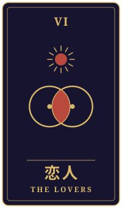

西の一棟
物語の手前に、ひとつの相談がありました。三枚のタロットをめぐるやりとりを、聞こえたままに書き留めています。
持ち込まれた相談
夫と四十年、菊のハウスをやってきました。冬は重油を焚いて温め、夜は電照の灯りをつけます。燃料の補助が少しずつ減ると聞いて、夫は「今季で加温はやめて、ハウスを半分人に貸そう」と言います。理屈ではわかるんです。でも、空く一棟で、若い頃からずっと好きだった花を育ててみたいと思ってしまう。菊はよく売れる花でしたが、私が選んだ花ではありませんでした。値上がりの冬に、この歳で道楽みたいなことを言い出していいのか。夫をがっかりさせないか。言うべきか、黙っておくべきか、迷っています。
タロットの読み解き

過去
恋人・逆位置
過去に出た恋人の逆位置は、心が二つの方向へ引かれて、どちらを選ぶかに迷っている様子を表すことがあります。長く夫と歩んでこられた年月の中で、ご自分の好きな花への思いと、ハウスを守ってきた責任との間で、ずっと揺れてこられたのかもしれませんね。

現在
女教皇・逆位置
今の女教皇の逆位置は、胸の内にある思いを、言葉にする前に自分で押さえ込んでしまう姿を映すことがあります。「道楽だと思われないか」「夫をがっかりさせないか」という問いが、いま心の中で静かに渦巻いているのでしょう。ただ、このカードは、答えを急がず、まずご自分の本当の望みを静かに見つめてみてはどうですか、と促しているようにも感じられます。

未来
隠者・逆位置
隠者の逆位置は、ひとりで抱え込み、外の声に耳を閉ざしてしまう流れを示すことがあります。もし今回の話を黙ったまま進めてしまえば、お互いの思いが届かないまま、距離が生まれてしまうこともあるかもしれません。反対に、少し心の扉を開いて話してみれば、思いがけない道が見えてくる余地もあります。
最後に
今回のカードが伝えているのは、結論を決めることよりも、まず胸の内の思いを言葉にしてみることなのかもしれません。夫の方も、ハウスを守るための現実的な考えから話しているはずです。どちらが正しいかを競うのではなく、「実はこんな花を育ててみたい」と、ひとつの希望として伝えてみるのも一つの方法でしょう。ただ、加温や貸し出しといった経営の大きな判断は、農業の専門機関や税理士などにも相談しながら、お二人で慎重に決めていかれると安心ですよ。
帰り際の問い一人でいることは、守りか、逃避か。
読み解きは、タロット占い「月夜のアルカナ」が、この相談と引かれた三枚から返したものです。小説は同じ三枚を、別の角度から描いています。相談者は物語のための架空の人物です。相談文・読み解き・短編本文は、いずれも生成AIを使って制作しています。
物語に戻る